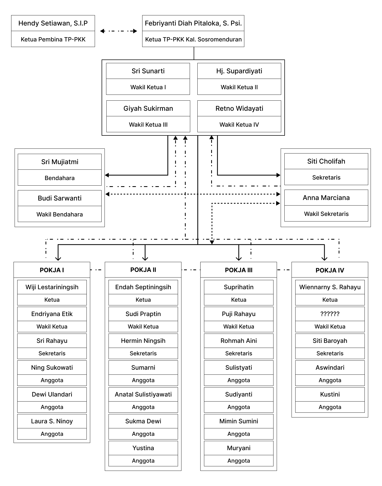

Membangun Keluarga, Sejahterakan Masyarakat.
"Selamat datang di portal resmi TP PKK Kalurahan Sosromenduran. Kami berkomitmen untuk terus berinovasi dalam pemberdayaan keluarga melalui 10 Program Pokok PKK demi mewujudkan ketahanan masyarakat yang mandiri dan religius."
Febriyanti Diah Pitaloka, S.Psi.
Ketua TP PKK Sosromenduran
Visi & Misi
Terwujudnya keluarga yang beriman dan bertaqwa kepada Tuhan Yang Maha Esa, berakhlak mulia dan berbudi luhur, sehat sejahtera lahir dan batin.
Tugas & Fungsi
Menjalankan peran krusial dalam pemberdayaan masyarakat melalui koordinasi yang terstruktur dan administrasi yang transparan sesuai ketentuan TP PKK Desa/Kelurahan.
Menyusun rencana kerja TP PKK Desa/Kelurahan, sesuai dengan hasil Rakerda PKK Kabupaten/Kota.
Menginformasikan, mengkomunikasikan, dan mengkonsultasikan Rencana Kerja TP PKK Desa/Kelurahan melalui Kepala Desa/Lurah kepada Camat untuk diteruskan kepada Bupati/Walikota melalui OPD yang membidangi urusan Pembinaan Pemerintahan Desa dan Pemberdayaan Masyarakat- Kabupaten/Kota selaku Pembina TP PKK, agar Rencana Kerja TP PKK Desa/Kelurahan menjadi bagian tidak terpisahkan dari Dokumen Perencanaan Pembangunan pada Pemerintah Daerah Kabupaten/Kota.
Melaksanakan kegiatan sesuai jadwal yang disepakati.
Menyuluh dan menggerakkan Kelompok-kelompok PKK Dusun/Lingkungan/RW/RT dan Dasawisma agar dapat mewujudkan kegiatan-kegiatan yang telah disusun dan disepakati.
Menggali, menggerakkan dan mengembangkan potensi masyarakat, khususnya keluarga untuk meningkatkan kesejahteraan keluarga sesuai dengan kebijakan yang telah ditetapkan.
Melaksanakan kegiatan penyuluhan kepada keluarga-keluarga yang mencakup kegiatan bimbingan, motivasi, dalam upaya mencapai keluarga sejahtera.
Mengadakan pembinaan dan bimbingan mengenai pelaksanaan program kerja.
Berpartisipasi dalam pelaksanaan program instansi yang berkaitan dengan kesejahteraan keluarga di Desa/Kelurahan.
Membuat laporan hasil kegiatan kepada Ketua Pembina TP PKK Desa/Kelurahan dan TP PKK Kecamatan.
Melaksanakan tertib administrasi.
Mengadakan konsultasi dengan Ketua dan Anggota Pembina TP PKK Desa/Kelurahan.
Struktur Organisasi

POKJA I
PKBN, Kadarkum, Pola Asuh Anak, Gotong Royong.
POKJA II
BKB, PAUD, UP2K PKK, Perpustakaan, Pelatihan Keterampilan.
POKJA III
HATINYA PKK, Sandang, Perumahan Sehat, Tata Laksana Rumah Tangga.
POKJA IV
Kesehatan, Posyandu, PHBS, LBS, Kelestarian Lingkungan Hidup.
Fokus Area POKJA
Setiap Kelompok Kerja (POKJA) mengemban tanggung jawab spesifik dalam mengimplementasikan program-program pokok ke tingkat akar rumput demi kesejahteraan warga.
Lihat Detail Program Kerja arrow_forward